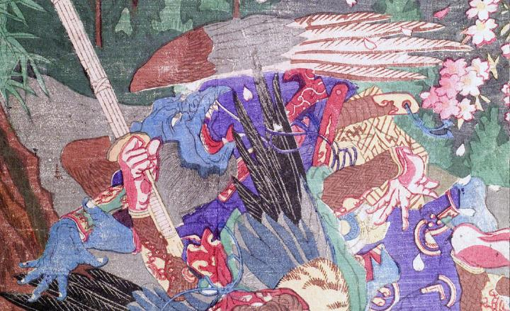

烏天狗。肌は青い。嘴のような口を大きく開け、鋭い歯を覗かせている。背に茶色と灰色の翼を生やしている。転倒して、怯えたように上方を見ている。
著作者：猩々周麿（河鍋暁斎）／出典：親書誌：U426_nichibunken_0130：僧正坊と牛若丸；ソウショウボウトウシワカマル／日付：2009／資源識別子：U426_nichibunken_0130_0001_0008
Copyright (c)2010- International Research Center for Japanese Studies, Kyoto, Japan. All rights reserved.